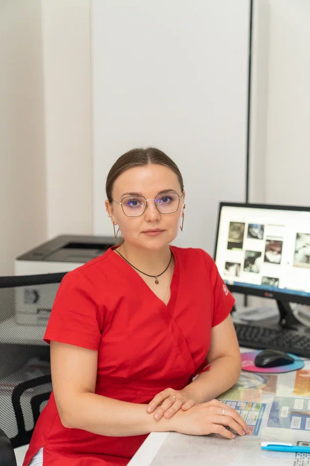
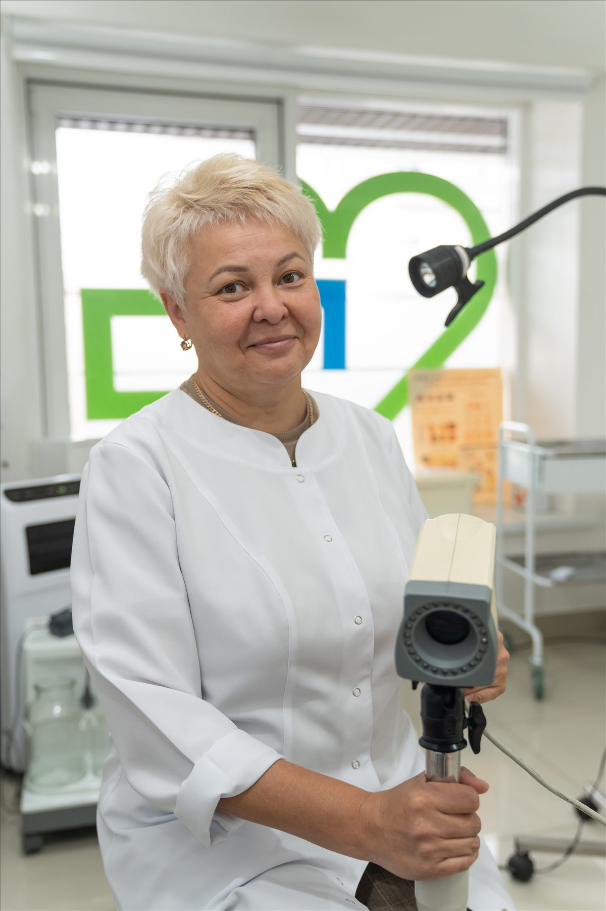
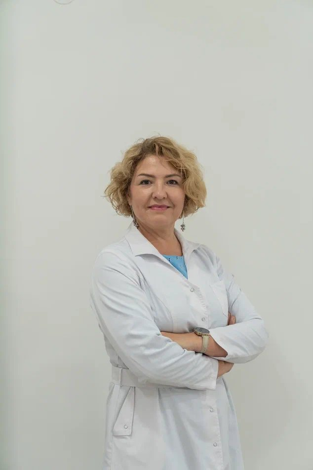

Гинеколог
Сухарева Дарья Олеговна
Прием гинеколога, профилактические осмотры, консультации по вопросам женского здоровья.
Специалисты
Выберите специалиста по направлению, филиалу и формату приема. Карточки помогают быстро понять профиль врача и перейти к записи без лишних шагов.

Гинеколог
Прием гинеколога, профилактические осмотры, консультации по вопросам женского здоровья.
Гинеколог, гинеколог-эндокринолог
Консультации гинеколога и гинеколога-эндокринолога, наблюдение и подбор дальнейшей тактики обследования.

Гинеколог
Прием гинеколога, профилактические осмотры, консультации и сопровождение женского здоровья.
Врач-косметолог, дерматолог
Консультации по состоянию кожи, косметологические процедуры и подбор индивидуального ухода.
Педиатр, неонатолог
Прием детей, наблюдение новорожденных, консультации родителей и помощь при частых детских жалобах.

Врач УЗИ, детский врач УЗИ
Ультразвуковая диагностика для взрослых и детей, плановые обследования и подготовка заключений.

Невролог
Прием взрослого невролога: консультации при боли, онемении, головокружении, нарушениях сна и других жалобах.
По выбранным фильтрам пока нет врача. Попробуйте другое направление или филиал.
Не знаете, к кому записаться?